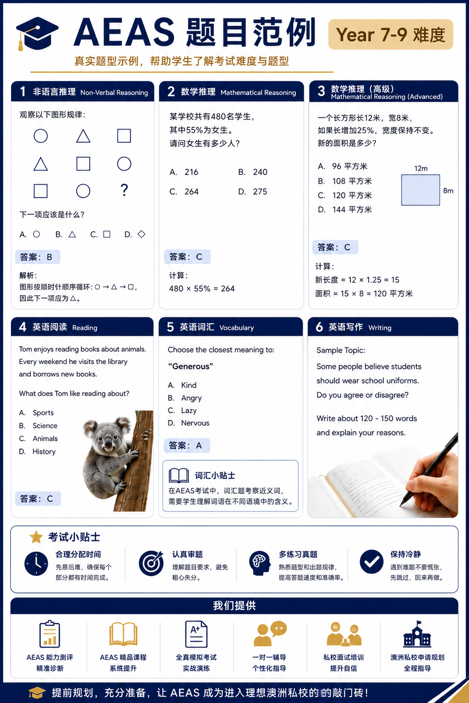

年级、成绩、英语水平、预算与入学时间。
澳洲中小学与升学考试规划
把澳洲留学申请，变成一条清楚、可执行的路线。
Reward School 睿澳升学专注澳洲留学代办、私校申请、AEAS 备考、PTE 提分与短期小留学体验。 我们帮助家庭从选校、考试、材料、面试到 Offer 跟进，把每一步提前规划好。近期开放 AI 口语与阅读批改限时免费试用，适合先做水平诊断。
适合人群
10-18 岁学生
目标澳洲私校家庭
PTE/AEAS 备考学生
AI 批改免费试用


2027 寒假项目
顶级私校沉浸成长营
14天13晚 · 12-17岁
Services
不是只给资料，而是帮你把路线跑通
从短期体验到长期升学，所有服务围绕“学生是否适合、学校是否匹配、准备是否到位”。

Why Australia
为什么很多家庭选择澳洲留学？
QS 排名亮眼澳洲多所大学常年位列世界前列，中小学到大学的升学衔接清晰。
学术实力扎实课程重视英文表达、批判性思维、项目研究和真实问题解决能力。
校园安全友好学校管理规范，学生支持体系成熟，国际学生更容易获得照顾与反馈。
多元发展空间体育、艺术、音乐、科技和社团活动丰富，不只用分数定义学生。
生活自然放松城市节奏相对舒适，海滩、公园和户外活动多，孩子更容易平衡学习与生活。
全澳择校灵活可根据学生目标匹配维州、新州、昆州、南澳、西澳等地区学校。
Application Service
留学代办：从“想去澳洲”到“拿到 Offer”
留学申请最怕信息碎片化。我们会把目标学校要求、申请材料、面试准备和时间节点整理成一张路线图， 让家长清楚现在该做什么，学生清楚自己该补什么。
按城市、课程、排名、面试要求与家庭偏好筛选。
整理申请表、成绩单、推荐材料与个人陈述方向。
模拟面试、补件提醒、Offer 进度跟进与入学安排。
AEAS Preparation
AEAS 不只是英文考试，也是私校录取竞争力的一部分
AEAS 常用于澳洲私立中学评估国际学生，考察英语能力、数学推理、非语言推理和学习潜力。 Reward School 睿澳升学提供分年级小班课、模拟考试、学习报告、家长反馈与私校申请规划。AI 口语与阅读批改现限时免费试用，方便学生先完成一次诊断。
- 7-9 年级与 10-12 年级分层课程
- 模拟测试、学习报告与阶段性反馈
- AI 口语与阅读批改限时免费试用
- Mock Interview、申请文件指导与 Offer 跟进

Programs
课程与规划方案
课程安排会根据学生基础、目标学校和备考时间制定，详情请预约咨询。
7-9 年级课程
英语、数学推理、非语言推理，小班课程训练，含督学与学习报告。
10-12 年级课程
强化学术英语、逻辑推理、模拟考试，结合阶段测评调整备考重点。
澳洲私校录取规划
选校规划、申请时间线、面试培训、文件指导与 Offer 跟进。



PTE Training
PTE 全科备考：听说读写一起规划，不只练口语
PTE 备考覆盖听说读写全科，需要系统理解 Speaking、Writing、Reading、Listening 各题型的评分方式。 我们会先评估目标分数与当前差距，再安排全科提分节奏。
Speaking 口语
Writing 写作
Reading 阅读
Listening 听力
查看 PTE 课程详情
Study Tour
2027 澳洲墨尔本顶级私校沉浸成长营
14 天 13 晚，以墨尔本为基地，融合澳网体验、顶级私校沉浸课程、 淘金文化、小企鹅归巢、澳洲名校探索与成果展示。适合 12-17 岁学生，重点不是走马观花， 而是让学生真实进入澳洲学习与生活场景，提前感受课堂节奏、英文沟通、团队合作和独立生活。
顶级私校课程
12-17 岁学生
澳网现场体验
淘金文化探索
小企鹅归巢
澳洲名校参访
结业证书
学习分析报告
全程安心管理
点击查看完整海报
12-17 岁学生，适合想提前体验澳洲课堂、了解未来留学适应度的家庭。
澳洲顶级私校，参与私校沉浸课程、Buddy Program 和专题项目。
澳网、Sovereign Hill 淘金文化、Phillip Island 小企鹅归巢、墨尔本城市探索。
获得海外学习成长经历、英语沟通提升、结业证书与学习分析报告。
Sample Itinerary
14 天精彩行程范例
以下为参考行程，实际安排会根据学校档期、天气、活动预约和安全管理需要微调。
顶级私校课程内容说明
- 英语能力提升：学术英语、口语表达、小组讨论、Presentation 技巧
- 澳洲课堂体验：与澳洲学生共同上课，体验澳洲课堂教学模式
- STEM 课程：科学实验、工程挑战、创新项目
- 创意课程：艺术设计、创意表达
- 体育课程：澳洲校园体育活动、团队合作训练
- Buddy Program：与澳洲学生结对子，进行校园文化交流
- 专题项目：小组研究任务与成果展示
晚间团康活动安排
- 桌游挑战赛
- 澳洲文化知识竞赛
- 羽毛球活动
- 英语闯关游戏
- 旅行手帐制作
- 团队合作挑战
- 分享交流会
学生将收获
- 澳洲顶尖私校课堂体验
- 澳大利亚网球公开赛现场观赛
- 澳洲淘金文化探索与菲利普岛生态体验
- 澳洲名校参访与升学体系认知
- 国际化团队协作能力与英语表达提升
- 结业证书、学习分析报告与海外学习成长经历
FAQ
常见问题
小留学适合什么年龄？
当前项目重点面向 12-17 岁学生，适合希望体验澳洲私校课堂和海外学习生活的中学生。这个年龄段的学生已经具备一定独立生活和课堂参与能力，也正适合提前感受澳洲学习方式。家长可以通过短期体验观察孩子是否适合未来长期留学。我们也会关注学生在课堂、生活和团队活动中的适应情况。
AEAS 需要提前多久准备？
通常建议至少提前 3-6 个月开始评估和准备。AEAS 不只是英文考试，还包括数学推理、非语言推理和学习能力表现。目标学校越明确，越需要提前安排考试时间、面试训练和申请材料。我们会先做水平判断，再帮学生制定备考节奏。
PTE 适合哪些学生？
PTE 适合需要英语成绩用于升学申请、课程衔接或其他英语能力证明的学生。课程覆盖 Speaking、Writing、Reading、Listening 全科，不只训练口语。我们会先评估目标分数和当前差距，再安排不同题型的提分重点。学生也会学习如何稳定发挥，而不是只靠临时刷题。
你们留学代办是只做墨尔本学校吗？
不是，我们的学校申请服务覆盖全澳范围。可以根据学生情况匹配维州、新州、昆州、南澳、西澳等地区的学校。墨尔本主要是小留学项目的基地，因为当地课堂体验和活动资源比较成熟。正式留学申请会以学生目标、预算、成绩和家庭偏好为核心来规划。
小留学和正式留学申请有什么区别？
小留学是短期体验项目，重点是让学生真实感受澳洲课堂、校园生活和城市环境。正式留学申请则是为长期入读澳洲学校做选校、材料、考试和面试准备。小留学不等于直接录取，但能帮助家庭判断孩子是否适合澳洲教育环境。很多家庭会先体验，再决定后续申请方向。
AEAS 小班课大概几个人？
AEAS 辅导主打小班模式，课堂人数会控制在适合互动和反馈的范围。我们会尽量避免大班讲座式教学，因为 AEAS 需要老师观察学生的逻辑、表达和答题习惯。小班课更方便及时纠正问题，也更适合做模拟练习。具体班级人数会根据开班安排确认。
AEAS 主要考哪些内容？
AEAS 常见考察内容包括英语能力、数学推理和非语言推理。英语部分通常涉及词汇、阅读、听力、写作等能力。数学推理关注学生运用数学知识解决问题的能力。非语言推理则更看重图形规律、空间想象和逻辑分析。
AEAS 成绩对私校申请重要吗？
对很多澳洲私立学校来说，AEAS 是评估国际学生的重要参考。学校会通过成绩了解学生的英文能力、学习潜力和是否适合当前年级。好的 AEAS 表现可以提升申请竞争力，但通常还需要结合成绩单、面试和其他材料。我们会把 AEAS 备考和私校申请一起规划。
如果孩子英文基础一般，可以准备 AEAS 吗？
可以，但需要先做真实水平评估。英文基础一般的学生不建议直接冲考试，而是要先补词汇、阅读、听力和写作基本能力。AEAS 还涉及逻辑和数学表达，所以准备方式不能只背单词。我们会根据目标学校和入学时间判断备考周期是否充足。
澳洲私校申请一般看什么？
学校通常会综合看学生成绩、英文能力、AEAS 或其他测试表现、面试状态和过往学习经历。不同学校和年级的要求会有差异。热门学校名额竞争更强，所以时间线和材料质量都很重要。我们会帮家庭先判断目标是否现实，再设计申请组合。
什么时候开始准备澳洲学校申请比较好？
越热门的学校，越建议提前规划。一般来说，至少提前 6-12 个月会更从容，部分学校甚至需要更早关注名额和考试安排。如果学生还需要 AEAS 或英文提升，就更应该提前开始。我们会根据目标入学年份倒推申请时间表。
你们会帮忙选学校吗？
会，选校是留学代办的重要环节。我们会结合学生年级、成绩、英文能力、预算、城市偏好、课程需求和家庭期待来筛选学校。不是所有排名高的学校都适合每个孩子。我们的重点是找到匹配度高、申请策略合理的选择。
小留学期间安全吗？
安全管理是小留学项目的核心部分。项目会安排住宿、餐食、交通、活动和日常作息管理。学生不是自由散漫地旅行，而是在计划好的行程中体验课堂和活动。具体安全安排会以最终项目说明和出行通知为准。
小留学会进入真实澳洲课堂吗？
项目设计重点就是让学生体验真实课堂环境。学生会有机会参与私校插班或课堂体验，与本地学习方式近距离接触。课堂安排会根据学校实际情况和项目档期确认。我们也会搭配城市探索、文化体验和名校参访，让孩子看到课堂外的澳洲生活。
小留学结束后会有什么成果？
学生通常会获得结业证书或项目参与证明，具体以项目安排为准。更重要的是，家长可以看到孩子在课堂参与、英文沟通、生活适应和团队合作方面的表现。项目也可以作为未来留学规划的参考。我们会鼓励学生整理学习收获，而不是只把它当成旅行。
PTE 课程会怎么安排？
PTE 课程会先看学生目标分数和当前基础。之后会按听说读写四个模块拆解题型、评分逻辑和练习重点。不同学生的短板不同，有的人需要补听力，有的人需要加强写作结构或阅读速度。课程会尽量围绕提分效率来安排。
PTE 可以短期提分吗？
PTE 通过系统训练是可以提升的，但提升范围会受到学生原本英语基础限制。课程主要是在现有能力上提高一个合理区间，而不是保证短时间跨越很大的分数差距。如果基础接近目标分数，集中训练题型、节奏和评分逻辑会更有效。我们会先评估当前能力和目标分数，再判断适合冲刺还是需要长期补基础。
家长第一次咨询需要准备什么？
建议准备学生年级、目前学校、成绩情况、英文水平和目标入学时间。如果已经有目标城市或学校，也可以一起告诉我们。对于 AEAS 或 PTE，最好说明是否考过、目标分数是多少。信息越完整，我们给出的初步路线就越准确。
还没有明确目标学校，可以先咨询吗？
可以，很多家庭一开始都没有明确目标学校。我们会先帮你梳理学生情况和家庭期待，再讨论适合的城市、学校类型和申请难度。咨询的目的不是马上定校，而是先建立清晰方向。后续再根据成绩、考试和名额情况逐步收窄选择。
Book a consultation
预约一次清晰的升学评估
告诉我们学生年级、目标服务和预计入学时间，我们会根据情况给出初步路线建议。 也可以直接扫描微信二维码添加我们，先简单说明孩子年级、目标学校或考试计划。

微信咨询
扫码添加我们，获取升学规划、AEAS/PTE 备考与小留学项目建议。